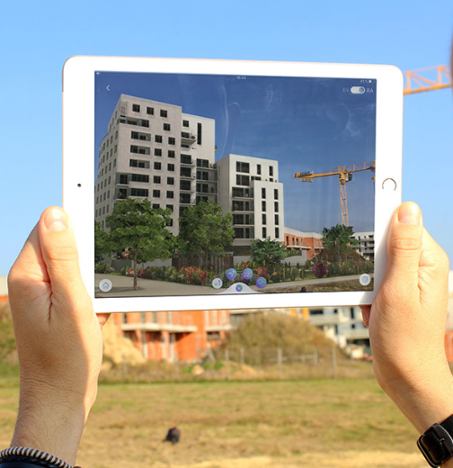

L'avènement de la réalité virtuelle et de la réalité augmentée a marqué une révolution significative dans le paysage professionnel, transformant la manière dont les entreprises opèrent, interagissent et innovent.
La réalité virtuelle est utilisée pour la formation des professionnels de la santé, offrant des simulations chirurgicales réalistes et des scénarios médicaux complexes pour améliorer les compétences pratiques.
En chirurgie, elle est employée pour la planification préopératoire et la navigation en temps réel, permettant aux chirurgiens d'améliorer la précision des procédures.
La réalité virtuelle médicale est également un domaine aux possibilités fascinantes. De l’assistance ou la simulation de réalisation de procédures chirurgicales complexes, au diagnostic d’un patient, la technologie permet aujourd’hui de faire évoluer la formation et l’apprentissage des professionnels du secteur. Certaines sociétés proposent déjà des solutions de VR pour former les chirurgiens ou leur permettre de s’entraîner pour affiner leurs compétences. Une étude de la Harvard Business Review publiée en 2019 montrait, par ailleurs, que les chirurgiens formés par la réalité virtuelle connaissaient une augmentation de 230 % de leurs performances globales par rapport à leurs homologues formés de manière traditionnelle. Les premiers étaient également plus rapides et plus précis dans l'exécution des procédures chirurgicales que les seconds.
Dans l'ingénierie, la Réalité Virtuelle est utilisée pour la conception de produits, permettant aux ingénieurs de visualiser des prototypes en 3D et de détecter d'éventuels problèmes avant la production. Cette approche immersive permet d'identifier et de résoudre efficacement d'éventuels problèmes avant même le lancement de la production, réduisant ainsi les coûts et les délais
La Réalité Virtuelle est également employée pour la formation des ingénieurs, simulant des environnements de travail complexes et des procédures d'urgence. Les ingénieurs peuvent ainsi affiner leurs compétences dans un environnement virtuel sûr, préparant ainsi la prochaine génération de professionnels de l'ingénierie à relever des défis variés et complexes avec une expertise accrue.
La réalité augmentée sur plan (ou marqueur) consiste à afficher un modèle 3D en visant un plan 2D. Intégrée dans une application dédiée au projet, la réalité augmentée sur marqueur est un des outils phare de la visualisation d’un bien immobilier en 3D.
Elle possède également une grande attractivité dans le cadre d’un salon immobilier et propose une interactivité qui permettra par exemple d’enlever les étages, de proposer un accès à des 360°, de télécharger les plans, etc. Il s’agit d’une bonne alternative aux maquettes physiques.
La réalité augmentée sur site offre la possibilité d’afficher un modèle 3D directement sur le lieu de construction à l’échelle voulue. Cela permet une excellente immersion et décuple la capacité de projection des investisseurs en les mettant face au projet dans la réalité et donne un bon aperçu de l’intégration de l’architecture. Il nécessite cependant de se rendre sur le lieu de construction afin de « tracker » le réel et de fixer le projet final en 3D. Il s’agit donc d’un très bon complément de la réalité sur marqueur. Dans le cas d’un constructeur de maisons individuelles, cette technologie peut lui permettre de constituer un véritable catalogue de maisons en 3D qu’il peut projeter sur le terrain de ses clients.